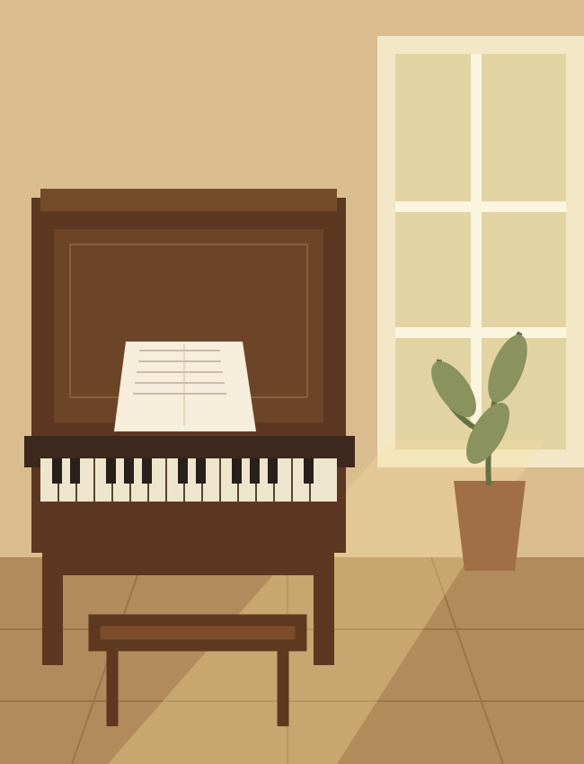

Young Musicians
Playful foundations, listening games and small milestones. Make the joy come first.
MUSIC LESSONS · NOTTING HILL & ONLINE
A first note. A favourite song. A lifelong possibility.
Piano, guitar, vocals and more, for ages five to adult.

INSTRUMENTS
You don’t need to know everything.
You just need a place to begin.
WHO WE TEACH
Playful foundations, listening games and small milestones. Make the joy come first.
Technique and creativity together. Explore songwriting, ensembles or exam preparation.
Start fresh or pick up where you left off. No exams unless you want them.
OUR TUTORS / FICTIONAL PROFILES
Illustrative tutors from the original brief. Qualifications, institutions, years of teaching and student results are unverified and not claimed.
Clear foundations and thoughtful practice ideas for piano and music theory.
Song-led guitar learning, from first chords to creative arrangements.
A supportive introduction to expression, performance and finding your voice.
SMALL STEPS, OFTEN
Try a simple weekly practice outline. It’s a starting point for a conversation with your teacher, not a curriculum or a results promise.
10 minutes × 3 days = 30 minutes a week. Try 2 minutes settling in, 3 on one skill, and 5 playing something you enjoy.
YOUR FIRST LESSON / A FREE TRIAL CONCEPT
No commitment. No experience needed.
Just a little curiosity.
This is a fictional school. Explore a local 30-minute trial plan, not live availability. Use an adult’s example email only, with no child’s name or personal details.
LEARNING WITH CONFIDENCE
No. The concept supports learning for pleasure or preparation for a chosen exam. No ABRSM/Trinity affiliation, exam-centre registration, pass rate or distinction is claimed.
A real teacher would discuss goals, experience and suitable next steps. The trial here is only a local planner; no lesson, teacher or free offer is available to book.
Confirm instrument size, accessibility, safeguarding, supervision and online arrangements with a real school. The concept is for ages five and above; no child information is collected.
There are no verified students or testimonials for this fictional academy. The brief’s parent and learner quotations are not presented as genuine endorsements.